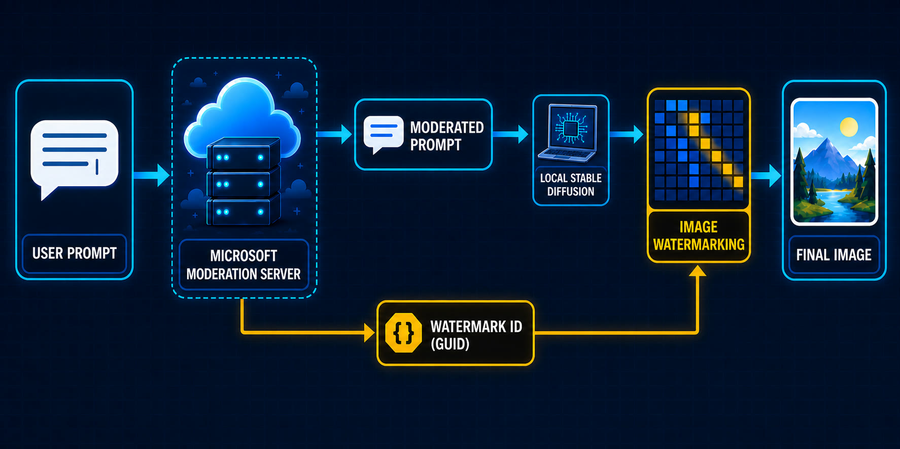
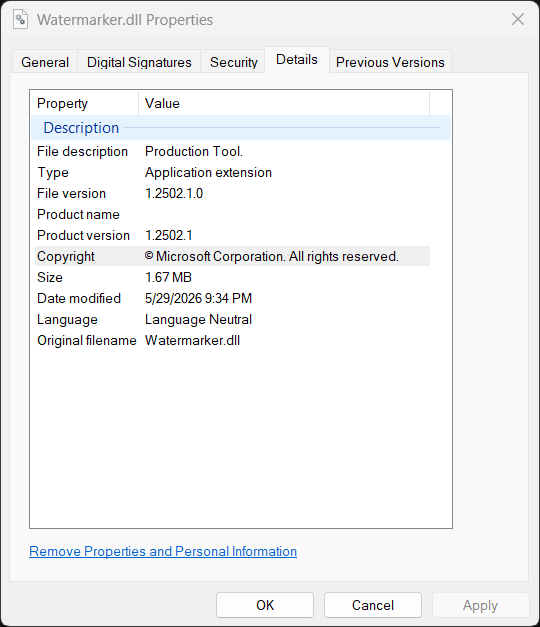
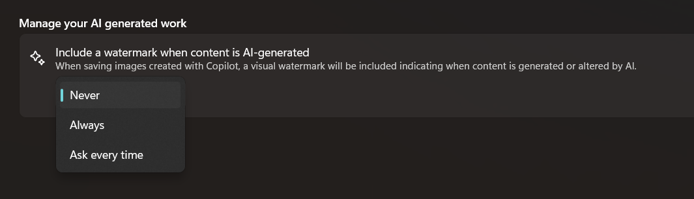

9 minutes
Microsoft Paint and Photos Embed Server-Issued GUIDs as Invisible Watermarks in Locally-Generated Images
TL;DR
- Microsoft Paint and Photos use local models to generate images
- The two apps send the prompt to a remote server for moderation
- The server returns a GUID along with the moderated prompt
- The GUID is embedded into the locally generated image as an invisible watermark
- A separate visible-watermark setting does not control this invisible watermark

A curious look at Microsoft Paint
This research started with my curiosity about Paint. I recently had some success looking into less-explored Windows features like UCPD, WHESCVC, and I have long known that Microsoft added a bunch of AI features into the Paint app. I do not know if anyone actually uses Paint + AI to generate images, but I wanted to see how exactly the image generation works.
Before I started, I expected that it simply called a remote API to do the image generation. However, after I set up Binary Ninja MCP with Codex and started the analysis, I soon realized that Microsoft actually shipped local models in Windows as part of Copilot.
The Paint App is sitting in the following path (yes, they are all Windows Apps now):
C:\Program Files\WindowsApps\Microsoft.Paint_11.2605.71.0_x64__8wekyb3d8bbwe\PaintApp\
And there are four apparent model files with the .onnxe extension:
seg.onnxe 23.1 MB
inseg_enc.onnxe 28.0 MB
inseg_dec.onnxe 16.5 MB
mager.onnxe 302.4 MB
The format of seg.onnxe was previously known, i.e., when it is XORed with the string Microsoft_2023, it becomes a normal ONNX file. However, the format of the other three .onnxe files initially looked different.
It turned out that Microsoft had not changed the algorithm, only the key. segapi.dll contains a small key registry:
ps_enc_key.1.0.80-main -> "Microsoft_2023"
ps_enc_key.1.0.81-main -> a 4,096-byte alphanumeric string
After decryption, onnx.checker.check_model() works on all of them:
| Model | Graph |
|---|---|
seg.onnx |
1,094 nodes, input input_image, output output |
inseg_enc.onnx |
1,014 nodes, output image_embeddings |
inseg_dec.onnx |
1,133 nodes, inputs for embeddings, points and masks; output masks |
mager.onnx |
15,284 nodes, image/mask inputs; output output |
A visible watermark
While walking through these files, I found a Watermarker.dll:

This is not super surprising to me, because while I interacted with the Paint app, I already discovered that it has a setting to embed a visible watermark to the image that it produces:

The visible watermark is just a small Copilot logo at the bottom right of the image, which is totally normal.
Then, out of nowhere, I decided to ask AI to analyze the DLL and see if it could also be embedding an invisible watermark. This is part of my intuition as a reverse engineer, because the file is 1.67 MB in size, which is unusually large for such trivial functionality (arguably, the visible watermark does not even require a separate DLL). Apparently, the recent Claude Code text-watermark announcement also played a role in prompting me to think about this possibility.
An invisible watermark
To begin with, the visible watermark is added by AddPerceptibleWatermark:
CPBDoc::Save(...)
|
`-- perceptible-watermark save helper(bitmap, WatermarkSetting)
|
+-- WatermarkSetting::Never
| `-- return the original bitmap
|
+-- WatermarkSetting::AskEveryTime
| `-- show the Yes / No confirmation popup
| +-- No: return the original bitmap
| `-- Yes: continue
|
`-- Always or confirmed Yes
+-- Paint::AI::GetPerceptibleWatermarkSvg()
`-- Paint::AI::AddPerceptibleWatermark(bitmap, SVG stream)
`-- composite the visible Copilot logo
Then there is also a different WmkWriteWatermark function:
Watermarker.dll!WmkWriteWatermark(
output_pixels,
payload,
payload_length,
width,
height,
stride,
input_pixels,
pixel_format);
Tracing the call tree, we can see WmkWriteWatermark is called after a local Stable Diffusion image generation. And if WmkWriteWatermark fails, Paint converts the entire generation into an error rather than returning the image without it:
CocreatorViewModel::GenerateImageAsync(...)
|
`-- Paint::AI::StableDiffusionHelpers::GenerateAsync(..., watermarkId, ...)
|
`-- Microsoft.ImageCreation.ImageGenerator
|
`-- NPU-generated image result
|
+-- output safety/moderation checks
|
+-- Paint::AI::AddWatermark(bitmap, watermarkId)
| |
| `-- Watermarker.dll!WmkWriteWatermark(...)
| |
| +-- success: return the watermarked bitmap
| `-- failure: turn generation into an error
|
`-- construct successful StableDiffusionResult
Then it is natural to ask what the incoming payload actually is. It quickly becomes apparent that it must be 16 bytes:
if (payload_length < 16)
return -6;
if (payload_length > 16)
return -5;
It is funny to me that the code is using two different error codes when the payload is too short or too long. The function then ignores the length parameter and uses a hard-coded loop bound when it copies the payload:
for (size_t i = 0; i < 16; i++)
message.push_back(payload[i]);
We do not yet know what the 16-byte payload is, but as we will see later, it is a GUID! WmkWriteWatermark does not embed the GUID directly. Its wrapper constructs the following 18-byte (144-bit) message:
0x4c || GUID[0..15] || (sum of the 16 GUID bytes modulo 256)
The core encoder rounds the usable image dimensions down to multiples of eight and keeps 144 counters, one for each bit. It requires every bit to be placed at least three times.
The encoder itself can be summarized as:
WmkWriteWatermark(output, guid, 16, width, height, stride, input, format)
|
+-- validate pointers, format, stride, and payload length
+-- require width >= 192 and height >= 192
+-- construct payload
| `-- 0x4c || GUID || byte-sum checksum
+-- expand 18 bytes into 144 individual bits
+-- round usable dimensions down to 8-pixel boundaries
+-- scan/select suitable image blocks
+-- quantize selected block/matrix values according to each bit
+-- require at least three successful placements per bit
| |
| `-- insufficient capacity -> return -8
`-- reconstruct RGB pixels into the output buffer
The embedding loop performs small quantized changes over selected image blocks. It contains 3-by-5 matrix operations and a matrix-decomposition routine, and it uses constants including 24.0, 0.25, 0.5, and 0.2. This looks like a content-adaptive block-domain, SVD-style watermark.
I am not an expert in image watermarking, but one thing should be clear – this is an invisible watermark! AI even wrote some code to call this function directly and tested it with a synthetic 512-by-512 BGRA image – 193,376 of the 262,144 pixels changed after adding the watermark.
That led to the next question. Where does the input of the watermark come from?
a GUID from remote prompt moderation
At the WmkWriteWatermark boundary, the payload is only a pointer and a length. Knowing that it must be 16 bytes was a clue, but many things can be 16 bytes. I therefore started walking backward through its callers. The immediate wrapper in PaintAIManager.dll has this symbolized signature:
Paint::AI::AddWatermark(
Gdiplus::Bitmap& image,
winrt::guid const& watermarkId);
winrt::guid, yikes! Now we know that the 16-byte watermark payload is indeed a GUID.
Further tracking the source, we find that the GUID actually comes from a network request. Before Paint runs the local image model, AIServices.dll sends the prompt and style to:
https://apsaiservices-a0fqcjc6bzbhgdcd.b02.azurefd.net/
v1/paint-cocreator/moderate-prompt
The request is JSON and contains at least these fields:
{
"prompt": "...",
"style": "...",
"lastPromptGenerationId": "..."
}
The response parser expects:
{
"revisedPrompt": "...",
"promptGenerationId": "...",
"watermarkId": "...",
"containsHumanReference": false
}
Static analysis is nice, but at this point I wanted to see a real response from the server. I reused Paint’s own authenticated session and sent the following prompt through the moderation endpoint:
a cobalt blue circle above a tiny orange square
The server returned HTTP 200:
{
"revisedPrompt": "a cobalt blue circle above a tiny orange square",
"promptGenerationId": "74d9e06b-adea-43ce-85fe-186a26e2e34a",
"watermarkId": "a4145750-cf7b-499f-9f21-98bead990887",
"containsHumanReference": false
}
I also tried the prompt a portrait of a smiling person wearing a blue hat.
This time the response contained a different pair of
GUIDs and containsHumanReference was true. The field is therefore a
server-side classification of whether the prompt refers to a human. Paint
parses and stores it alongside the IDs, although I found no evidence that it
controls the watermarking step itself.
ParseModerateResponse parses both ID strings as GUIDs and rejects zero values with InvalidPromptGenerationId or InvalidWatermarkId. The server’s watermarkId is what becomes part of the generated image:
PaintUI.dll
`-- IPromptModerationService
`-- PaintAIManager.dll
`-- AIServices.dll!ModerateAsync(...)
|
+-- build JSON
| +-- prompt
| +-- style
| `-- lastPromptGenerationId
|
+-- HTTPS POST /v1/paint-cocreator/moderate-prompt
|
`-- AIServices.dll!ParseModerateResponse(response)
+-- revisedPrompt
+-- promptGenerationId -> parse as GUID
+-- watermarkId -> parse as GUID
`-- containsHumanReference
|
`-- PaintUI stores WatermarkId
`-- StableDiffusionHelpers::GenerateAsync(..., watermarkId, ...)
`-- local Stable Diffusion result
`-- Paint::AI::AddWatermark(bitmap, winrt::guid const&)
`-- WmkWriteWatermark(..., guid, 16, ...)
`-- modified RGB pixels
In other words, “generated locally” does not mean that the complete operation is local. Microsoft receives and moderates the prompt, then issues the unique GUID that Paint embeds into the locally generated image. Paint also sends the previous promptGenerationId as lastPromptGenerationId with its next moderation request, allowing successive requests to be linked explicitly.
Photos app does the same thing
While I was trying to locate the Watermarker.dll on disk, I happened to notice that Microsoft Photos contains a DLL with the same name:
C:\Program Files\WindowsApps\
Microsoft.Windows.Photos_2026.11060.2004.0_x64__8wekyb3d8bbwe\Watermarker.dll
There are also local Stable Diffusion operations behind Photos’ Image Creator and Restyle Image features. Both lead to the same watermark wrapper:
Photos Image Creator
`-- PerformSDTextToImageAndWatermarkAsync(..., promptGenerationId, ...)
+-- run the local text-to-image model
`-- ApplyWatermark(image, promptGenerationId)
+-- parse promptGenerationId as a GUID
+-- ConvertGUIDtoContiguousByteArray()
+-- convert RGBA to ARGB
+-- Watermarker.dll!WmkWriteWatermark(..., guid, 16, ...)
`-- convert ARGB back to RGBA
Restyle Image takes the parallel path:
Photos Restyle Image
`-- PerformSDSketchToImageAndWatermarkAsync(..., promptGenerationId, ...)
`-- ApplyWatermark(image, promptGenerationId)
`-- Watermarker.dll!WmkWriteWatermark(..., guid, 16, ...)
A subtle difference between Photos and Paint is failure behavior. If the watermark encoder returns an error, its code logs:
ApplyWatermark encountered error: ... - watermark will not be applied.
It then appears to continue returning the generated image. Paint instead treats a watermarking failure as a generation failure and the image is not returned to the user.
Conclusion
To the best of my knowledge, this is the first research to document and analyze the invisible-watermarking behavior of Paint and Photos. Visible watermarks on AI-generated images are not new—Microsoft documents them for Microsoft 365 and Bing Image Creator—nor are invisible pixel watermarks such as Google’s SynthID and Bing’s hidden watermark.
Microsoft does disclose an adjacent mechanism: Paint and Photos attach C2PA Content Credentials, which live at the file-metadata level rather than being encoded into the pixels. This might be related to Article 50 of the EU AI Act, whose transparency rules took effect on August 2, 2026 and require AI-generated content to carry a detectable, machine-readable mark—but not a prompt-specific GUID.
However, I could not find any disclosure from Microsoft regarding Paint’s and Photos’ use of the watermark, yet it carries obvious privacy and right-to-know implications.
It also appears possible to modify Paint or Photos to bypass both prompt moderation and watermarking. But that does not provide a new capability: anyone can already run Stable Diffusion directly without either mechanism.